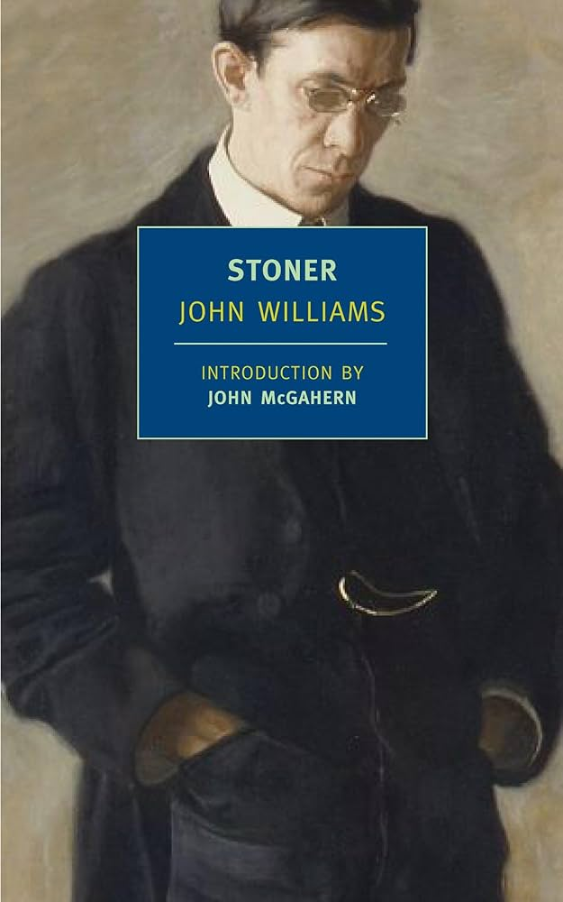

-

Stoner
John Williams
"Stoner" by John Williams was one of the first novels I ever read, and it is still my favorite. The writing is absolutely beautiful, drawing me into a peaceful, almost familiar setting. I was captivated by the complex character dynamics, especially the exploration of relationship abuse through the stoic lens of Stoner. His quiet discovery of love, both for literature and in his personal relationships, was deeply inspiring to me. The tender relationship with his daughter moved me, and this book played a huge role in making me fall in love with fiction.
-

Project Hail Mary
Andy Weir
"Project Hail Mary" was my first science fiction book, and I was completely surprised by how immersed I became in the story. Andy Weir did an incredible job making it feel like a movie I was watching. Every time I stopped reading, I couldn't wait to start again. The characters were fantastic, and the entire book was a rollercoaster ride. The story made me realize how much I still have to learn about the natural world—especially in physics and chemistry. It also deepened my appreciation for mathematics as the language of our universe and left me with a sense of moral responsibility to better understand it.
 Non-Fiction
Non-FictionThe Grapes of Wrath
John Steinbeck
"The Grapes of Wrath" plunged me into the immersive desperation of the Dust Bowl era as Steinbeck made me feel like a member of the Joad family traveling west in their overloaded truck. His meticulous attention to detail—from the grit of Oklahoma dust to the haunting emptiness of an empty stomach—created such a vivid experience that I shared in every moment of their struggle, heartbreak, and fleeting moments of dignity, making their journey toward an uncertain California dream feel like my own personal odyssey through America's darkest economic chapter.

Kai Murakami Morales
Data Science Student